Nyzo version 581 (commit on GitHub) adds the relay server.
This version introduces a new run mode, the relay server. Also, it makes some small changes that affect AJAX updates.
The relay server is not a necessary component for most users working with Nyzo. It is, however, a part of our current web infrastructure, and the code developed for it will be used in other run modes. We are still working toward making all of our infrastructure open source, and this is being released publicly to move toward that goal.
The relay server is a simple proxy server for delivering web content. It is currently running on relay0.nyzo.co and relay1.nyzo.co. While other software would have been suitable for these servers, running a common codebase on all of our servers improves efficiency of deployment and allows us to test the codebase in more settings to improve resiliency.
The nyzoMicropayServer.conf file was removed. The scripts should now be used for generating configuration files.
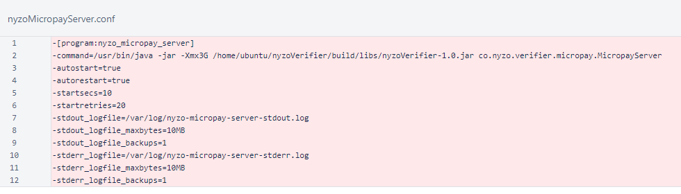The nyzoRelayServer.sh script was added for generating the configuration file for the new run mode.
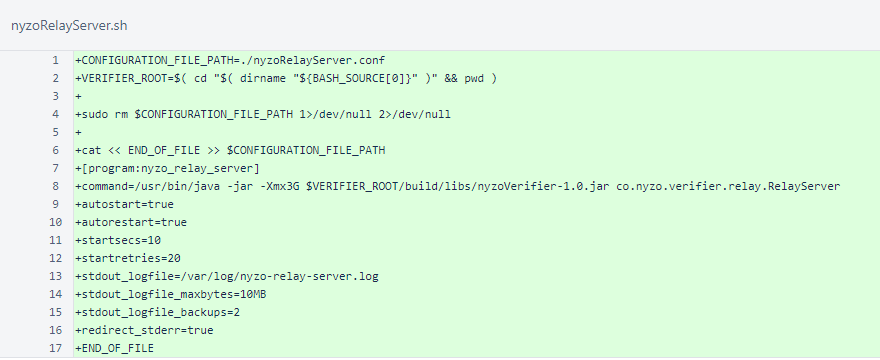The nyzoSentinel.conf file was removed. The scripts should now be used for generating configuration files.
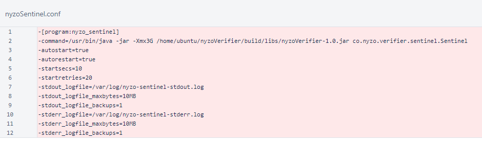The nyzoVerifier.conf file was removed.
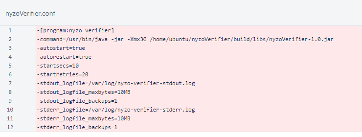The RelayServer value was added to the RunMode enumeration.
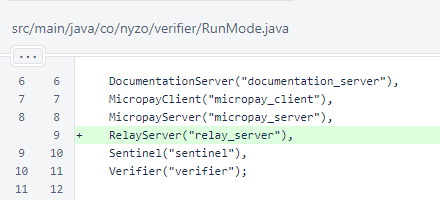The new RelayController class builds the endpoints for the relay server. The endpoints are specified in the /var/lib/nyzo/production/relay_endpoints file. This is a comma-delimited file. The octothorpe (#) is the comment delimiter. The first element of each line is the source endpoint or file, the second element is the destination endpoint, and the third is the refresh interval in milliseconds.
So, to have the relay server echo the contents of https://nyzo.co/cycleInfo to an endpoint of /info, refreshing every 5 seconds, the following line would be placed in the configuration file.
https://nyzo.co/cycleInfo,/info,5000
To have the contents of /var/lib/nyzo/production/web/index.html mapped to the root endpoint, refreshing every minute, the following line would be placed in the configuration file.
file://var/lib/nyzo/production/web/index.html,/,60000
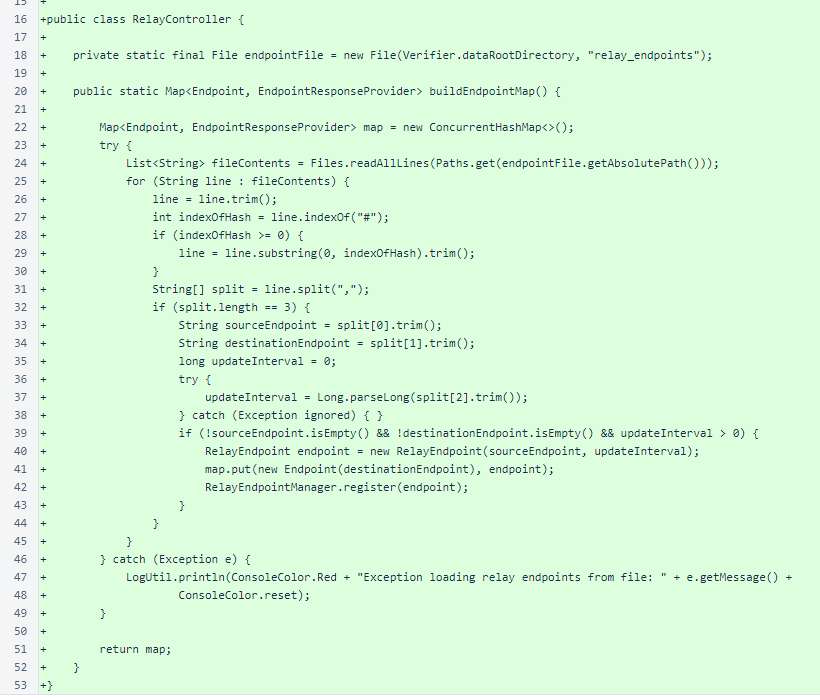The RelayEndpoint class implements EndpointResponseProvider. This class fetches data and produces responses for all endpoints on the relay server. The refresh() method either reads a file or retrieves the contents of a URL, and it produces an EndpointResponse with the data it collects. The Last-Modified header is set to indicate the age of the content, and the Access-Control-Allow-Origin header is set to * to allow cross-site scripting.
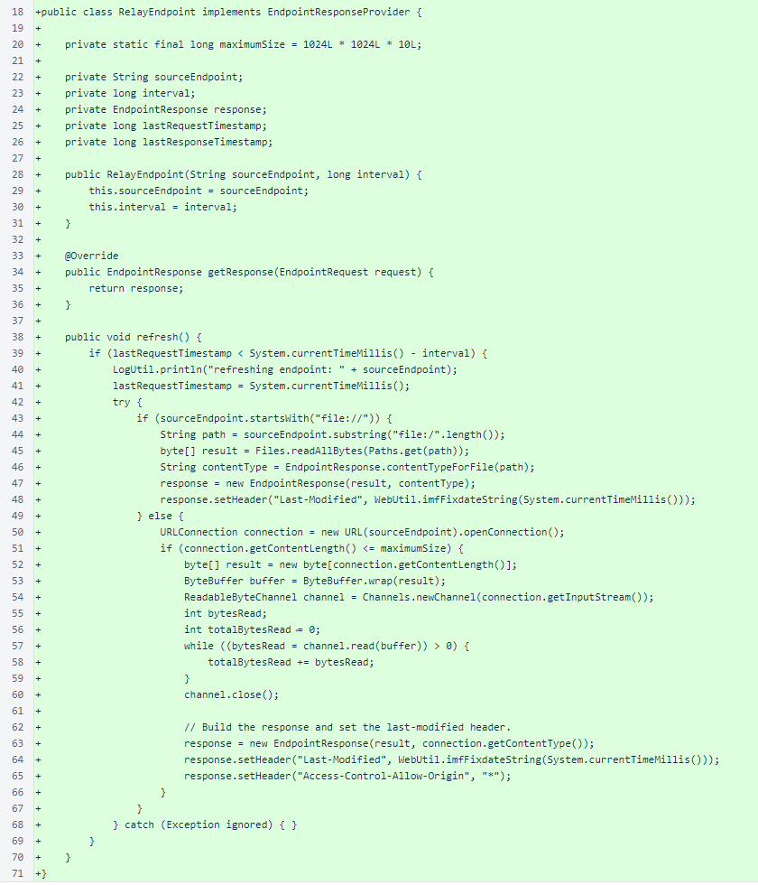The RelayEndpointManager class manages the refresh of registered RelayEndpoint objects.
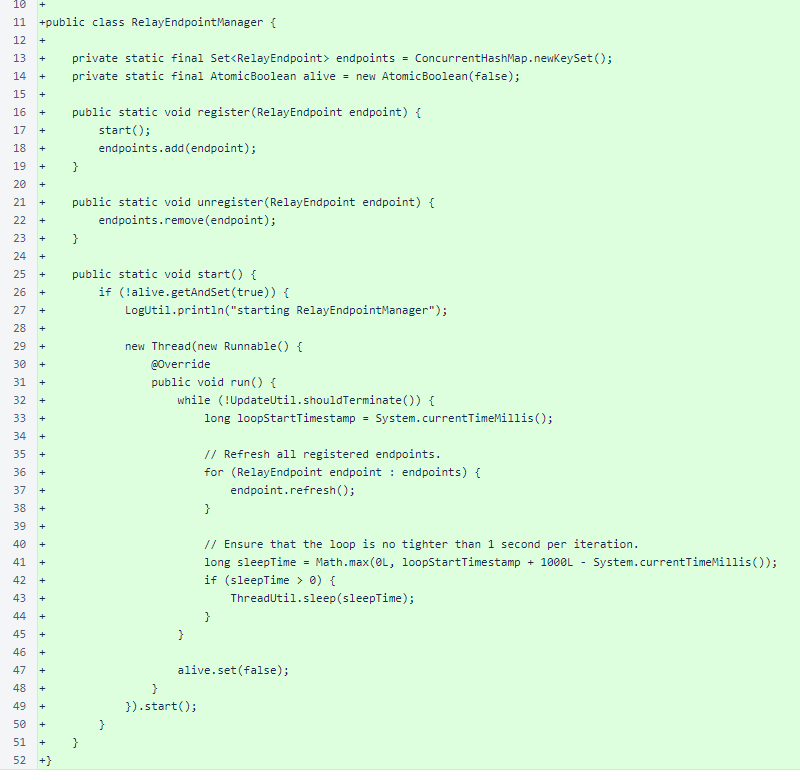The RelayServer class is the entry point for the relay-server run mode. The class sets the run mode and starts the web listener.
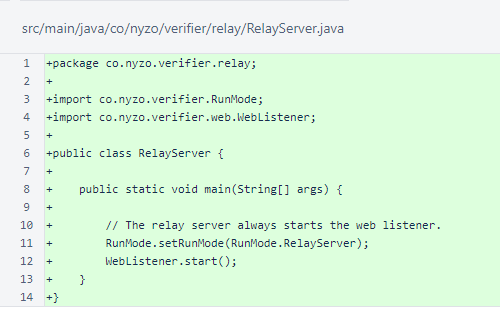In the EndpointResponse class, the contentTypeForFile() method was added to automatically determine content types for common file types. Similar logic is implemented separately for both the documentation server and Micropay server. In a future version, some refactoring will be performed to reduce undesirable redundancy in the codebase.
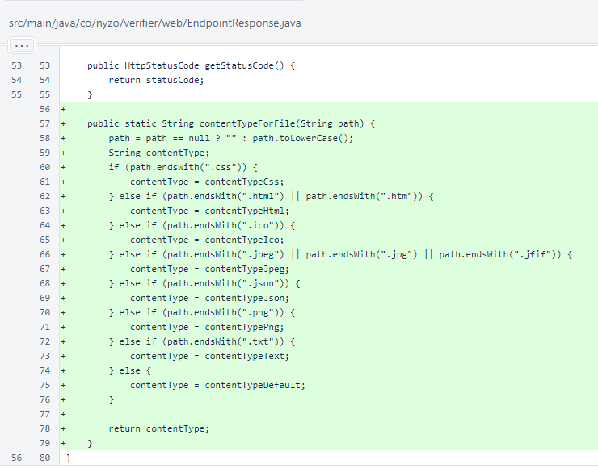In WebListener, an preference was added for the connection timeout. The default is the previous value of 2.0 seconds.
The web listener is always started for the relay server, and the RelayController provides the endpoint map.
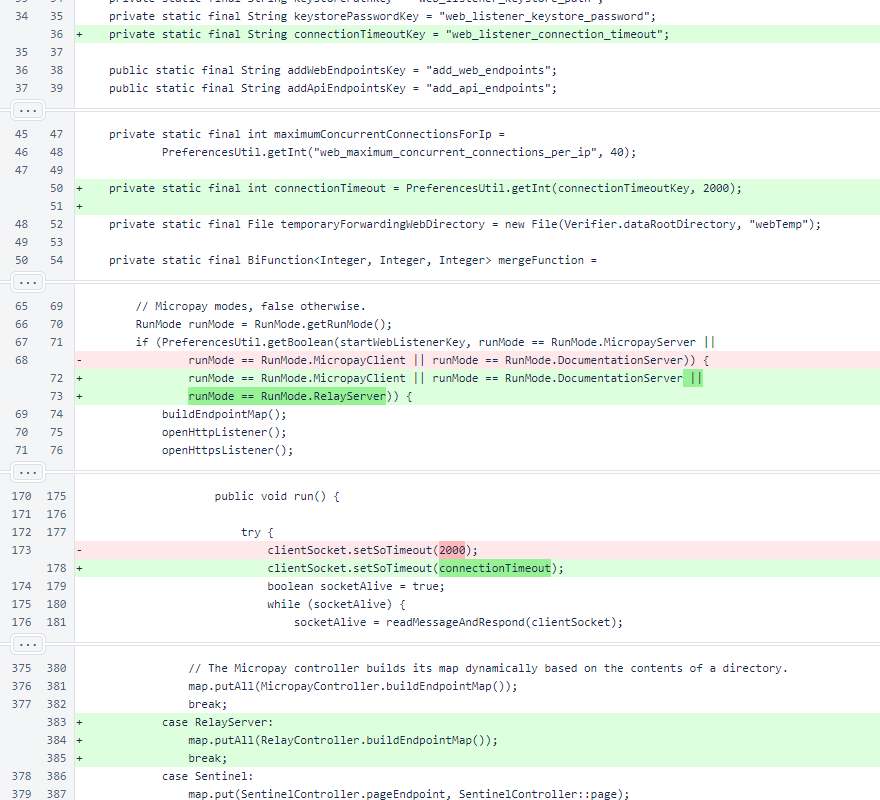In WebUtil, a method was added for providing dates in IMF-fixdate format. This is the preferred date/time format for HTTP/1.1, as specified in RFC 7231, section 7.1.1.1. This method is used by RelayEndpoint for the Last-Modified header.
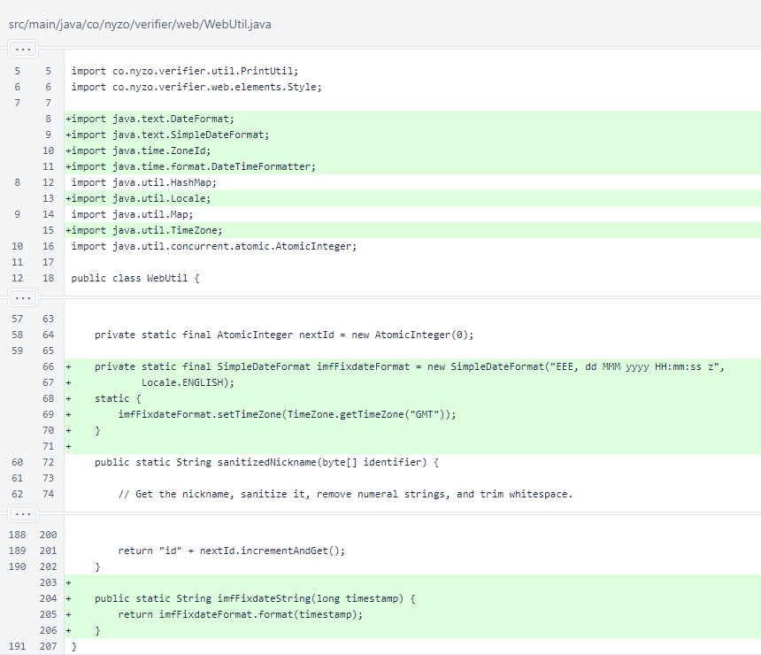In HtmlTag, the ajaxUpdate() method parameters were reworked to add flexibility. A new overload was added as a passthrough with the same signature and ultimate behavior as the old method.
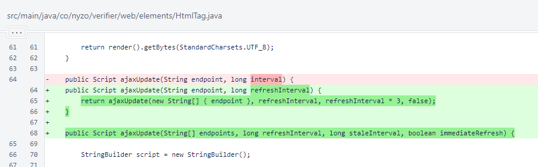In the generated JavaScript of HtmlTag.ajaxUpdate(), the separate refreshInterval and staleInterval are now used. An array of endpoints is now used, though the behavior is unchanged if only a single endpoint is present in the array. The contentTimestamp is used to store the timestamp represented by the Last-Modified header of responses.
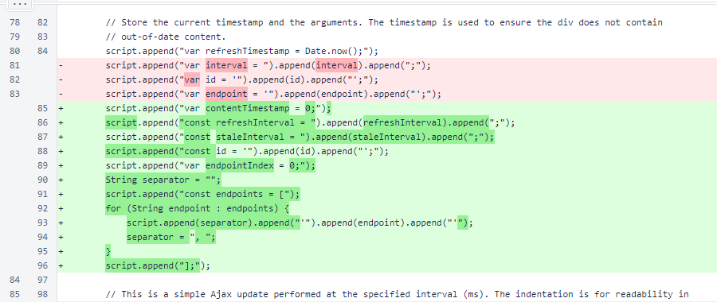The refresh now uses setTimeout() instead of setInterval() to provide better spacing of requests, and the endpoints are queried in a circular queue. Use of the Last-Modified value, if present, ensures that a later update with older source content does not take precedence over newer source content.
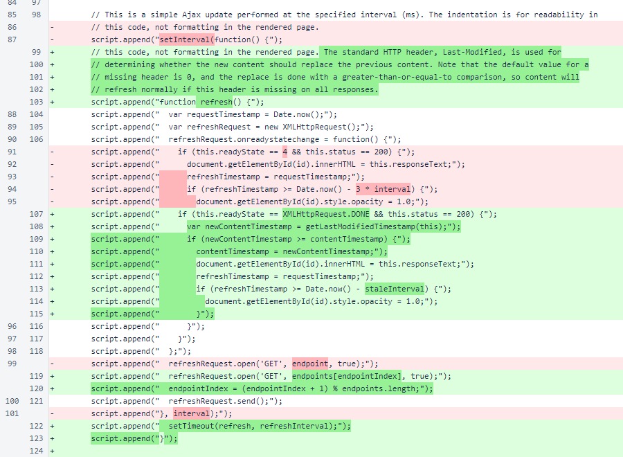A helper JavaScript function was added to get the timestamp from the Last-Modified header. There is now an immediateRefresh option that triggers the refresh a single time without delay.
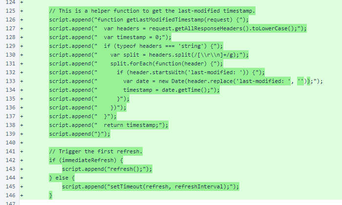The separate staleInterval is now used to allow a varying relationship between refresh rate and the amount of time that must elapse before an element's opacity changes to indicate that it is no longer current. This function, which is inexpensive computationally and produces no network traffic, is now executed at a higher rate relative to the interval.
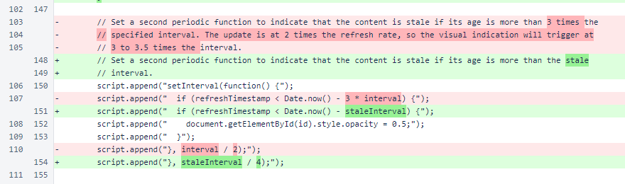